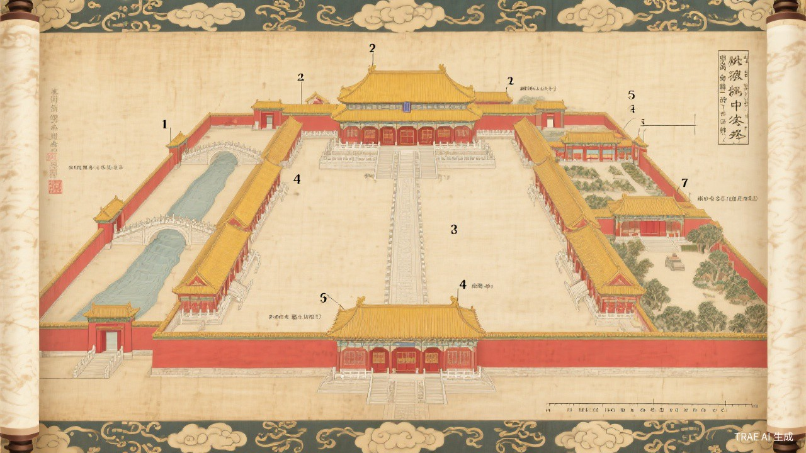

宣纸风格建筑图解 — 展示故宫建筑群的完整空间布局与中轴对称格局
中国古代建筑群之巅峰
The Forbidden City · Palace Museum
紫禁城 · 世界文化遗产 · 始建于永乐四年（1406年） 世界遗产

宣纸风格建筑图解 — 展示故宫建筑群的完整空间布局与中轴对称格局
"故宫是世界上现存规模最大、保存最为完整的木质结构古建筑群。其严谨的建筑布局、壮丽的宫殿建筑、精美的彩画装饰，集中体现了中国古代建筑艺术的最高成就，是中华五千年文明的重要载体。"
— 联合国教科文组织 · 世界遗产委员会
故宫的正门，建于明永乐十八年（1420年），城台上建有五座楼阁，俗称"五凤楼"。午门是皇帝颁发诏书、举行献俘礼的重要场所，也是整座宫城最为宏伟的城门建筑。
俗称"金銮殿"，是故宫中最大的殿宇，也是中国现存最大的木结构大殿。太和殿是皇帝举行重大典礼之所，如登基、大婚、册封、命将出征等，体现了至高无上的皇权威严。
内金水河上的五座汉白玉石桥，形如玉带，是进入太和门前的必经之路。中间一座为御路桥，专供皇帝通行；两侧为王公桥、品级桥，严格体现封建等级制度。
太和殿、中和殿、保和殿共同坐落在一座三层汉白玉须弥座台基之上，台基雕刻有精美的莲花纹、卷草纹，四角设有螭首用于排水，雨时千龙吐水，蔚为壮观。
紫禁城城墙四角各有一座角楼，结构精巧绝伦，屋顶多达九梁十八柱七十二条脊，是中国古代建筑中最为复杂的屋顶结构之一，被誉为中国古代建筑的杰作。
位于紫禁城中轴线的最北端，是皇帝和后妃休憩游赏之处。园内布局对称，古柏苍松、奇石罗布，亭台楼阁错落有致，体现了皇家园林的庄重与雅致。